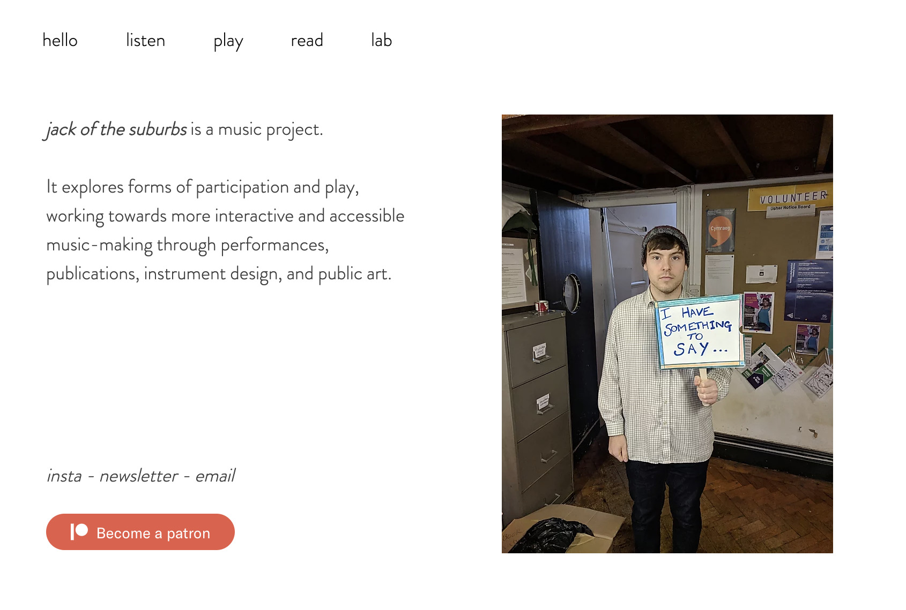

archive stuff, and keep track of things.
Back to Blog | Gary-Martin
Jack of the Suburbs / Reflections |
|---|
|
I have produced a website that contains a number of completed outputs. I believe that the website is useful to present a multi-faceted project such as this. It hosts a variety of content I have split up into categories, stuff you can listen to, stuff you can play with, and stuff you can read. I’ve deliberately used action words rather than noun words as menu headings to encourage active participation throughout the jack of the suburbs experience. I have kept the about/bio/info language simple, short, and clear. I believe the project is summarised well in this short paragraph. I have also included a link to my instagram page (this is the primary platform for the project, but already existed and is for casual content distribution), a link to sign-up to a newsletter, a link to my email address, and a link to my patreon page, where people can support the project with monthly subscription in exchange for exclusive content. Some of the outputs included a series of interactive music ‘toys’ which can be found under the ‘play’ tab. These were the result of my coding practice over the past few weeks. They are indicative of things I would like to continue to make for this page, despite being simple and can’t be used on mobile devices yet. I intend to develop more tools that can work on mobile devices and host them here with the others. I think this approach of building tools that allow for creative engagement is the most recent and developed for my project. Strangely enough, it is how we work at pyka as a company. We build tools and then use those tools to facilitate creative experiences. This is also how I see how the idea of the Lucky Dragons piece ‘Make a Baby’ could incorporated into my project. They designed an instrument which then allowed for collaborative music making at performances. They didn’t focus the attention on the tool, but the performance itself. In my performances I intend to create inclusive opportunities for people to participate in making music, and to do this I will need to create new tools that can allow this to happen. I don’t think traditional instruments are fit for purpose for this type of collaboration. This isn’t to say I am resisting their use or existence, I play traditional instruments myself and take great please from it. But unfortunately they are too exclusive to facilitate participatory music-making with the public. I digress.... I also have a number of recorded outputs on the site, but it is important to note that these were live performances or medium specific works that have been documented, and not presented as traditional music outputs in forms such as an EP or album. They are evidence of processes, not streamable songs. Any songs I do make are presented in an interactive form. So far.... I am feeling super positive about the direction of my project and am looking forward to creating a bunch of new experiments, and putting some of the ideas around live performance into practice. |